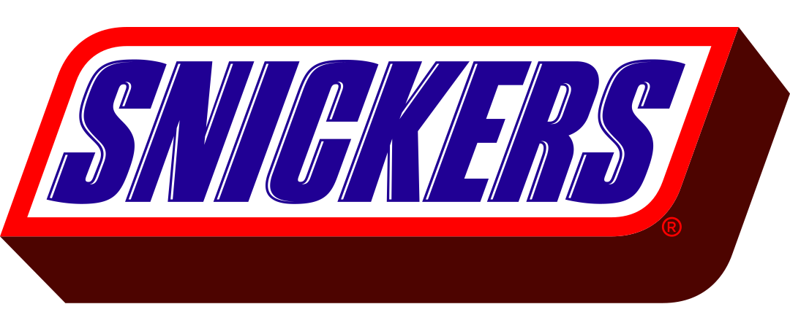
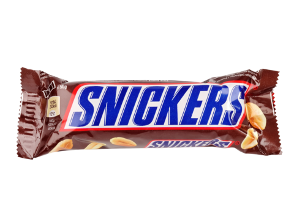

Trek? je bent jezelf niet als je trek hebt.
Producten bekijken
CREAMY. DE VERTROUWDE SMAAK VAN SNICKERS, NU MET EEN DIKKE LAAG SMEUÏGE PINDAKAAS!
probeer nu

snickers ice cream
tijd om te chillen
net toen je dacht dat snickers niet cooler kon
meer bekijken
